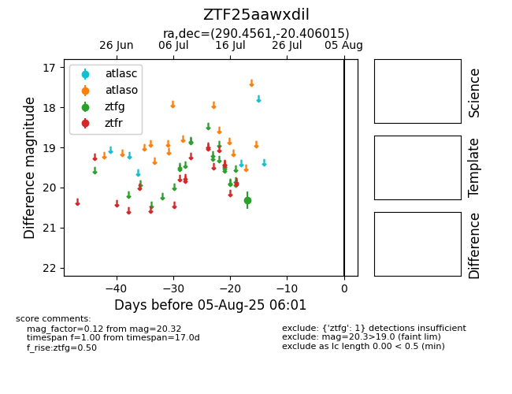

Target ZTF25aawxdil at 2025-08-05 06:01, see:
FINK: fink-portal.org/ZTF25aawxdil
Lasair: lasair-ztf.lsst.ac.uk/objects/ZTF25aawxdil
ALeRCE: alerce.online/object/ZTF25aawxdil
alt names
ZTF25aawxdil (ztf,fink)
coordinates:
equatorial (ra, dec) = (290.4561,-20.40602)
galactic (l, b) = (17.6512,-15.62024)
photometry
last ztfg=20.32
1 ztfg detections
